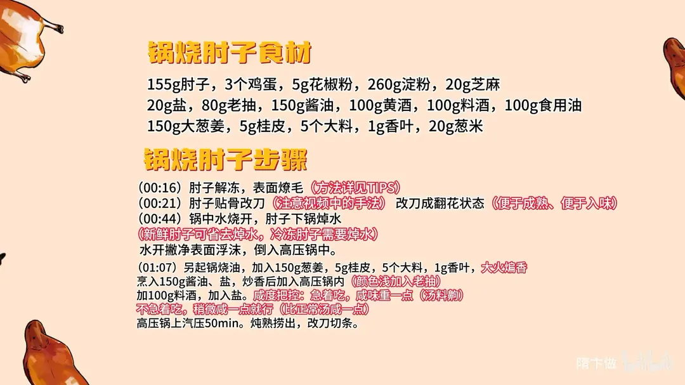
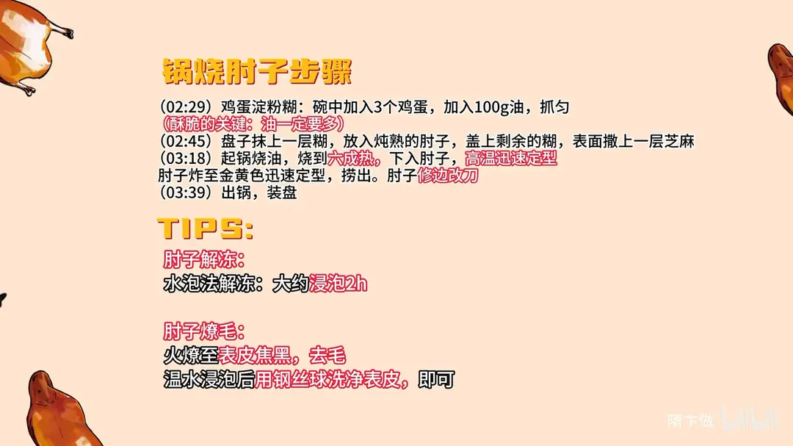

锅烧肘子
隋卞一做。肘子先燎毛、贴骨改刀成翻花，高压锅上汽 50 分钟炖熟；挂糊用 3 个鸡蛋加 260g 淀粉、100g 油（油一定要多），六成热下锅高温快速定型炸至金黄，表皮焦脆、里面软糯。
原视频：https://www.bilibili.com/video/BV1Kc41117dh
食材
肘子、鸡蛋 等 16 样
| 类别 | 用料 | 用量 |
|---|---|---|
| 主料 | 肘子 | 155g |
| 挂糊 | 鸡蛋 | 3 个 |
| 挂糊 | 淀粉 | 260g |
| 挂糊 | 食用油 | 100g |
| 挂糊 | 花椒粉 | 5g |
| 挂糊 | 芝麻 | 20g |
| 卤制 | 大葱姜 | 150g |
| 卤制 | 桂皮 | 5g |
| 卤制 | 大料 | 5 个 |
| 卤制 | 香叶 | 1g |
| 卤制 | 酱油 | 150g |
| 卤制 | 老抽 | 80g |
| 卤制 | 料酒 | 100g |
| 卤制 | 黄酒 | 100g |
| 卤制 | 盐 | 20g |
| 点缀 | 葱米 | 20g |
步骤
- 解冻燎毛：肘子解冻，表面燎毛。
- 改刀：肘子贴骨改刀，改刀成翻花状态，便于成熟、便于入味。
- 焯水：锅中水烧开，肘子下锅焯水；新鲜肘子可省去焯水，冷冻肘子需要焯水。水开后撇净表面浮沫，倒入高压锅中。
- 炒香料调味：另起锅烧油，加入 150g 葱姜、5g 桂皮、5 个大料、1g 香叶，大火煸香，烹入 150g 酱油、盐，炒香后加入高压锅内；颜色浅可加老抽，再加 100g 料酒、盐。咸度按「急着吃咸味重一点，不急着吃比正常汤咸一点」把握。
- 压肘子：高压锅上汽 50 分钟，炖熟后捞出，改刀切条。
- 调鸡蛋淀粉糊：碗中加入 3 个鸡蛋，加入 100g 油，抓匀；油一定要多。
- 挂糊撒芝麻：盘子抹上一层糊，放入炖熟的肘子，盖上剩余的糊，表面撒上一层芝麻。
- 炸制：起锅烧油，烧到六成热；下入肘子，高温快速定型，炸至金黄色迅速定型后捞出，肘子修边改刀。
- 装盘：出锅装盘。
小贴士
- 解冻用泡水法，大约浸泡 2 小时。
- 燎毛要火燎至表皮焦黑，刮去毛；再用温水浸泡，用钢丝球洗净表皮即可。
讲解要点
难度：★★★★☆（炖不难，难在挂糊——糊里油少了炸出来是硬壳不是酥壳）
为什么这么做
- 贴骨改刀成翻花：肘子厚薄不均，不翻开中间熟不透也不入味；翻开后厚度一致，厚的地方再补两刀。
- 冻肘子焯水、新鲜的可省：冻过的血水腥味重，焯一下撇沫；新鲜肘子光吃肉时连水都不用焯。
- 香料先用油大火煸香再下锅：香料要爆开才出香，直接扔进汤里释放得慢。
- 咸度分两档：急着吃就咸到位，因为泡的时间短；不着急就比汤略咸，泡两小时补味。
- 糊里要加足油：油让糊起酥、炸后出一层泡泡，糊也更顺、好抹开。
- 六成热、大火快炸：肘子本身是热的熟肉，只需要把糊炸透上色；高温迅速定型，不吸油、里面不干。
- 花椒面、葱花撒在糊上：这道菜的增香靠花椒盐，配辣酱卷着吃才对味。
容易翻车
- 糊里油少，炸出来硬邦邦。
- 油温低，糊会脱、会大量浸油。
- 改刀不到位，中间没味。
- 炖完不捡骨头、不按平，切出来就散。
- 炸久了里面油化光，切开是干的。
- 炖的时间按自家高压锅脾气来：卡片写 50 分钟，视频口述上汽后 35 分钟，以筷子能轻松扎透为准。
原片尾卡


原片文案
AI 字幕校准稿
马上过年了，是时候教你们点压箱底的东西了——鲁菜名菜，锅烧肘子。
冻好的肘子正常解冻就行，不会解冻的，也把解冻方法给你们放个片尾。处理好的肘子，咱们给它改下刀，便于成熟、便于入味：贴着骨头拉开，这样肉基本上就全都翻开了，翻开以后厚度都是一样的；厚的地方再给它改两刀，改成是个花儿似的。
加点料酒焯水，焯到什么程度算好？焯一下就行，上面有点浮沫，撇一下就行了。新鲜肘子没这步也行；其实我在家光吃肉的时候，我真的连水都不焯，毕竟咱们这肘子是冻了一夜的。
把它搁在高压锅里边。另起锅加点油，油要适当多一点，葱姜香料大火给煸香；炒香之后往里面加酱油——咱们现在做的所有步骤，都是为了把料炒香，然后在煮肉的时候让它入味、有底味。炒香了之后倒在锅里边。看这颜色有点浅，再加点老抽，加一勺料酒、盐。做完以后你想立马吃有味，咸味就要足一点，就得吃齁；如果不着急，做完之后往上泡俩小时，那就比汤稍微咸一点就行了。上汽以后压 35 分钟。
把骨头捡出去，先按一下，按平，很软烂，然后给它切一下。
然后我们调个糊，加入鸡蛋打散，鸡蛋里面加入淀粉，就是鸡蛋淀粉糊；然后把这油再抓进去，加点油。这糊看着好听话——你加油之后就很听话了。把盘子底下抹一层糊，把炖熟的肘子整个盖上，撒上花椒面、还有葱花。这里没放盐，如果肘子炖完不咸，在这花椒面里加点盐就可以了。然后把剩下的糊盖上，上面撒一层芝麻。
起锅烧油，烧到六成热，直接开大火就可以高温迅速定型。因为我们肘子现在都是热的，只让糊炸熟了，里面就没有问题。你看那个糊表面起了很多泡泡，这糊炸了以后肯定会很酥，所以糊里面的油起到了很大的作用。炸到金黄色，直接捞就可以了。给它改一下刀，摁一下，然后修下边。
来吧，我亲爱的兄弟，这个得这样卷着吃。好香——外面是酥脆的，配了辣酱，味道挺重的，但那个花椒盐的香味很香；花椒盐的香会伴着肘子香料的香，一咬外面是酥脆的，里面肘子的油和皮啪一下化了。这个花椒盐最大程度完成了增香的作用。怪不得是名菜，味道也好、层次也好，味道很多但是它不乱，它不炸，它的味道层次是有主次的，一层一层传递给你的嘴巴。
如果今天都按我们这个视频来做，我觉得不管你去什么宴席、给谁做，这个菜都是很上台面的，很好吃的。而且虽然它是名菜，但它没有想象的那么难。